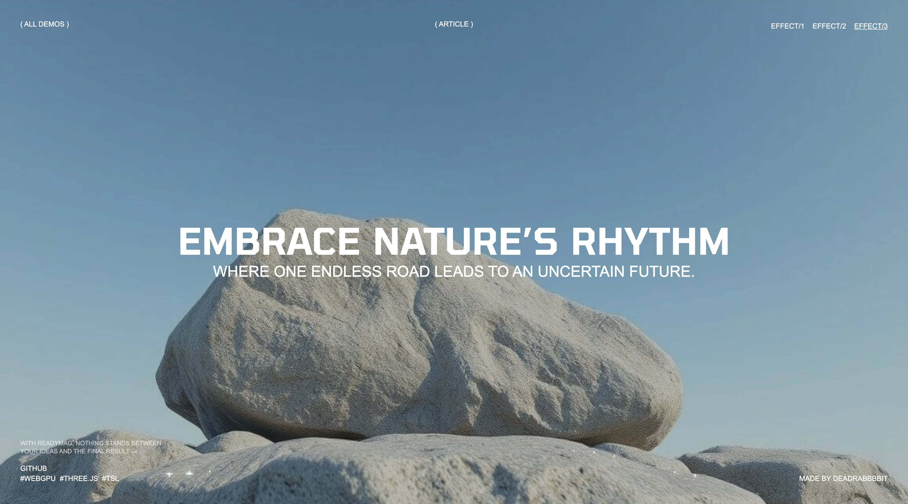
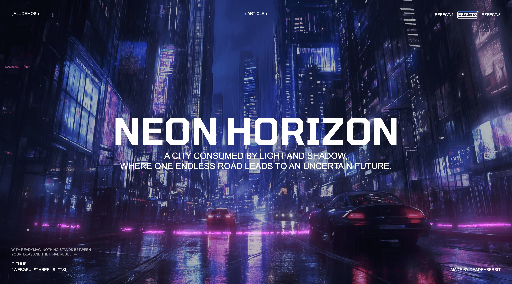

// Interactive Web Experience
ScanEffect
An interactive WebGL experiment showcasing a real-time depth-based scanning effect with dynamic shaders, immersive lighting, and fluid camera movement. The project demonstrates modern graphics rendering techniques, cinematic animations, and high-performance visual effects to create a unique and engaging web experience.


Project Overview
This project demonstrates a real-time depth-based scanning effect that blends WebGL rendering, custom shaders, and smooth animations to create an immersive visual experience. By utilizing depth maps and dynamic lighting, the scene produces realistic scan transitions while maintaining high rendering performance. The project highlights modern graphics techniques, interactive motion design, and creative visual storytelling for the web.
Key Features
- Real-time depth-based scanning effect with dynamic visual transitions.
- Interactive 3D environment powered by modern WebGL rendering.
- Smooth camera movement and immersive scene navigation.
- Animated lighting and shader-driven visual effects.
- High-performance rendering optimized for modern browsers.
- Responsive layout with adaptive canvas rendering.
- Seamless animation timeline for fluid user interactions.
- Minimal interface focused on cinematic visual storytelling.
Technical Highlights
- WebGL-powered rendering pipeline for GPU-accelerated graphics.
- Three.js used for scene management, camera, and object rendering.
- GLSL shaders for depth mapping and custom scan effects.
- Optimized animation loop using requestAnimationFrame.
- Efficient texture loading and asset management.
- Modular JavaScript architecture for maintainable code.
- Responsive rendering with automatic viewport resizing.
- Performance optimization through lightweight rendering techniques.